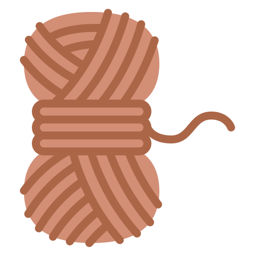
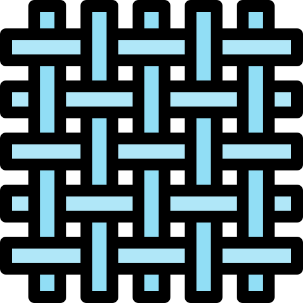

<ion-tabs #tabs (ionTabsDidChange)="handleTabsChange($event)">
  <ion-tab-bar slot="bottom" class="tab-bar">
    <ion-tab-button tab="main">
      <ion-icon name="home-outline"></ion-icon>
      <ion-label>메인</ion-label>
    </ion-tab-button>
    <ion-tab-button tab="yarn">
      
      
      <ion-label>실</ion-label>
    </ion-tab-button>
    <ion-tab-button tab="pattern">
      
      
      <ion-label>패턴</ion-label>
    </ion-tab-button>
    <ion-tab-button tab="community">
      <ion-icon name="chatbubbles-outline"></ion-icon>
      <ion-label>게시판</ion-label>
    </ion-tab-button>
  </ion-tab-bar>
</ion-tabs>
